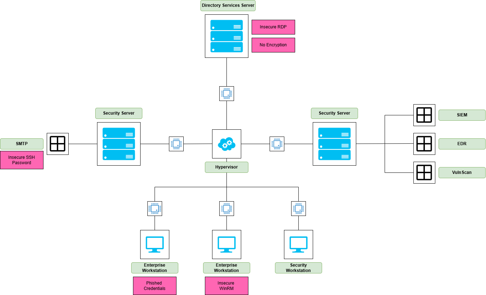
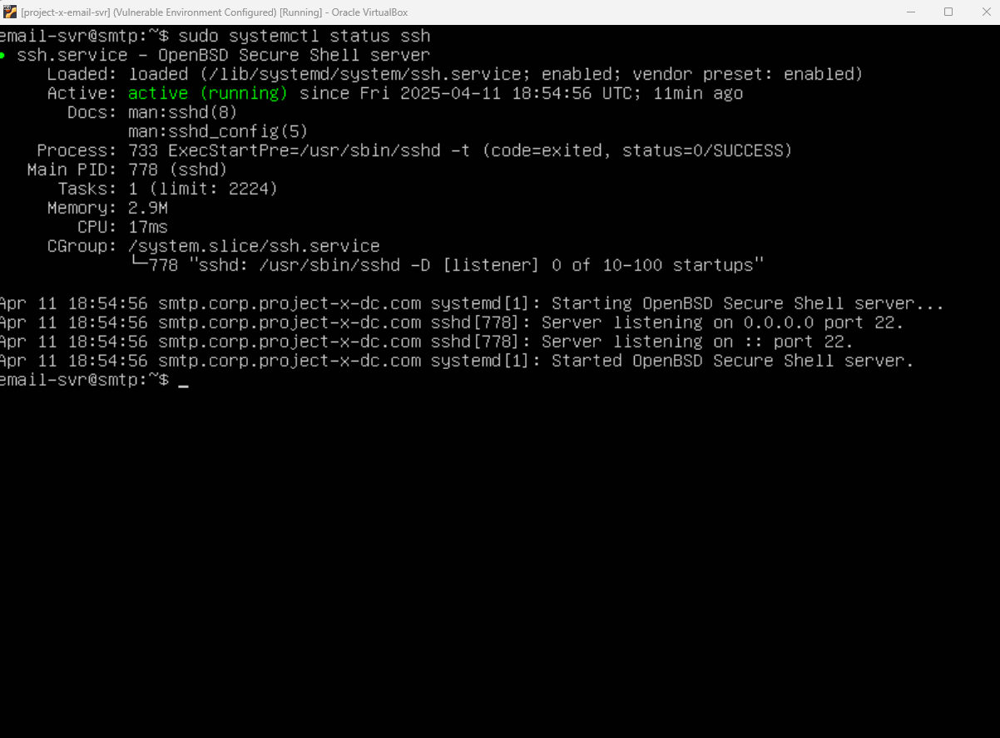
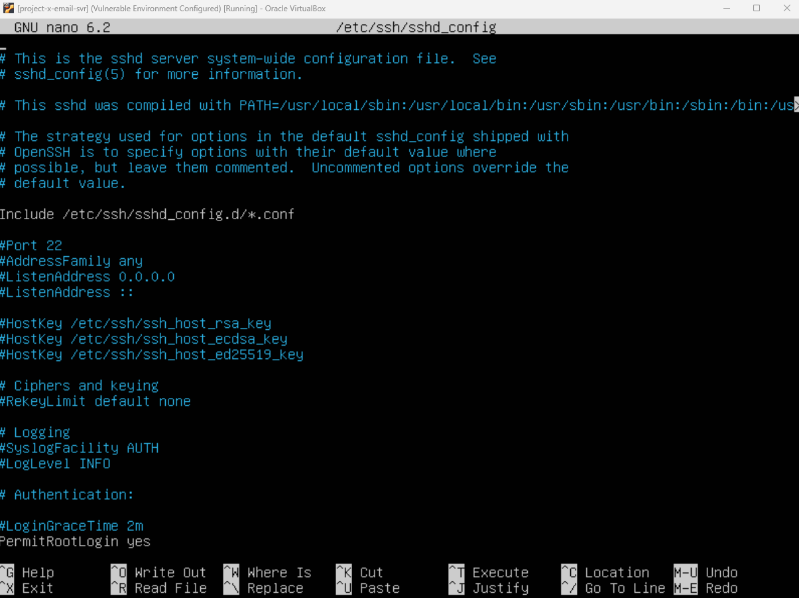
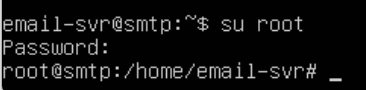
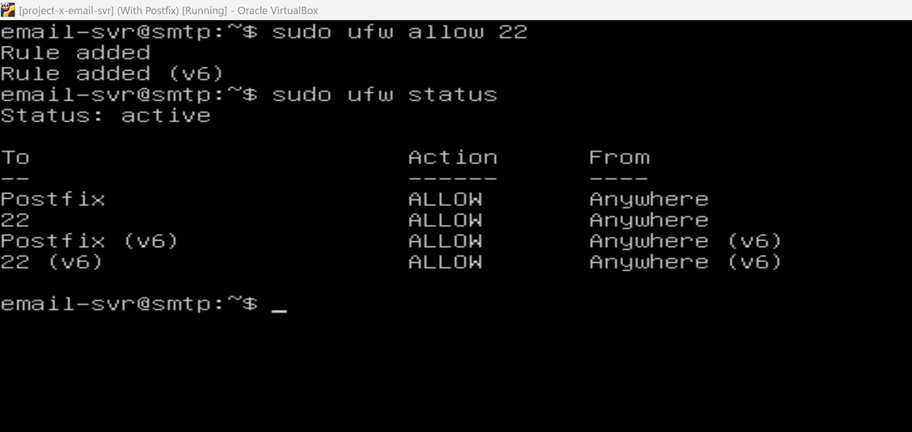

📌 Network Topology Overview
This diagram shows the vulnerable enterprise environment I configured for red team testing. Each component is intentionally misconfigured — from insecure SSH and RDP settings to exposed services and phished credentials — in order to simulate realistic attack paths across the lab.
Vulnerable Lab Network Diagram
(Click to enlarge)

×
🧨 Setting Up a Vulnerable Environment
For this phase of the project, I intentionally applied insecure configurations across my Project-X network to simulate a real-world weak environment. The goal was to leave obvious gaps like default SSH credentials, exposed WinRM services, and no encryption, so I could later detect and respond using Wazuh.
Detection integrations will come after this setup section.
🛠️ First Target: Project-X Email Server (project-x-email-svr)
I started by setting up the Ubuntu 22.04 server running Postfix, intentionally leaving several misconfigurations in place.
🔓 SSH Server Setup
First, I enabled the SSH service and made sure it started automatically at boot:
sudo systemctl start ssh
sudo systemctl enable ssh
Then, I verified SSH was running:
sudo systemctl status ssh

🛠️ Applying Vulnerable SSH Configurations
Now it was time to apply some various vulnerable configurations that could be found in real-world setups.

I went into the SSH configuration and:
- Navigated to the
#PermitRootLogin block
- Uncommented the line and changed
prohibit-password to yes
- Located the
PasswordAuthentication line and uncommented it if it was commented
After making those changes, I restarted SSH:
sudo systemctl restart ssh
Then I set root’s password to something extremely weak and easy to guess — "november":
I was now logged in under the root account:

🔥 Opening Firewall Ports
The final thing I did was enable the UFW firewall and allow port 22 into the server.
sudo ufw allow 22
sudo ufw enable
Postfix and SSH (port 22) were now open on both IPv4 and IPv6.

📋 Detection Gaps – No Wazuh Agent Installed
Important note: project-x-email-svr does not have the Wazuh agent installed.
This was intentional — to show how the absence of detection tools can leave a huge blind spot for malicious activity.